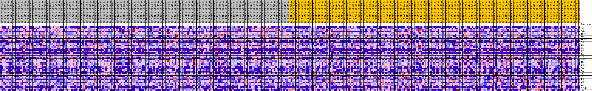
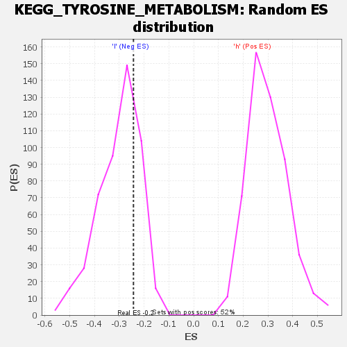

| | | Dataset | VCAN.VCAN.cls#h_versus_l.VCAN.cls#h_versus_l_repos |
| Phenotype | VCAN.cls#h_versus_l_repos |
| Upregulated in class | l |
| GeneSet | KEGG_TYROSINE_METABOLISM |
| Enrichment Score (ES) | -0.24289408 |
| Normalized Enrichment Score (NES) | -0.8085396 |
| Nominal p-value | 0.73498964 |
| FDR q-value | 1.0 |
| FWER p-Value | 1.0 |
Table: GSEA Results Summary
 Fig 1: Enrichment plot: KEGG_TYROSINE_METABOLISM
Fig 1: Enrichment plot: KEGG_TYROSINE_METABOLISM
Profile of the Running ES Score & Positions of GeneSet Members on the Rank Ordered List
| SYMBOL | TITLE | RANK IN GENE LIST | RANK METRIC SCORE | RUNNING ES | CORE ENRICHMENT | | 1 | TH | na | 313 | 0.120 | 0.0537 | No |
| 2 | AOC2 | na | 986 | 0.098 | 0.0898 | No |
| 3 | ADH5 | na | 2096 | 0.080 | 0.1093 | No |
| 4 | ADH1C | na | 2504 | 0.076 | 0.1394 | No |
| 5 | METTL6 | na | 8287 | 0.039 | 0.0540 | No |
| 6 | NAA80 | na | 8602 | 0.037 | 0.0667 | No |
| 7 | FAH | na | 9125 | 0.035 | 0.0745 | No |
| 8 | ALDH1A3 | na | 9931 | 0.031 | 0.0753 | No |
| 9 | METTL2B | na | 10233 | 0.030 | 0.0846 | No |
| 10 | HGD | na | 10430 | 0.029 | 0.0954 | No |
| 11 | ADH4 | na | 10764 | 0.028 | 0.1030 | No |
| 12 | GSTZ1 | na | 12319 | 0.021 | 0.0854 | No |
| 13 | DBH | na | 12467 | 0.021 | 0.0929 | No |
| 14 | GOT2 | na | 13481 | 0.017 | 0.0829 | No |
| 15 | TYR | na | 13795 | 0.016 | 0.0849 | No |
| 16 | ADH7 | na | 15491 | 0.010 | 0.0591 | No |
| 17 | IL4I1 | na | 16524 | 0.007 | 0.0436 | No |
| 18 | DDC | na | 17862 | 0.003 | 0.0207 | No |
| 19 | LCMT1 | na | 21467 | -0.001 | -0.0438 | No |
| 20 | COMT | na | 22525 | -0.004 | -0.0609 | No |
| 21 | ALDH3B2 | na | 27241 | -0.017 | -0.1379 | No |
| 22 | ADH1B | na | 27480 | -0.018 | -0.1334 | No |
| 23 | MIF | na | 28748 | -0.021 | -0.1459 | No |
| 24 | MAOB | na | 31318 | -0.028 | -0.1784 | No |
| 25 | AOC3 | na | 31547 | -0.029 | -0.1682 | No |
| 26 | LCMT2 | na | 31635 | -0.029 | -0.1554 | No |
| 27 | AOX1 | na | 31908 | -0.030 | -0.1455 | No |
| 28 | ADH6 | na | 35076 | -0.039 | -0.1838 | No |
| 29 | DCT | na | 35787 | -0.040 | -0.1767 | No |
| 30 | ADH1A | na | 37616 | -0.045 | -0.1874 | No |
| 31 | TYRP1 | na | 39863 | -0.051 | -0.2027 | Yes |
| 32 | BUD23 | na | 40472 | -0.053 | -0.1876 | Yes |
| 33 | TAT | na | 42449 | -0.058 | -0.1946 | Yes |
| 34 | HEMK1 | na | 44493 | -0.064 | -0.1998 | Yes |
| 35 | HPD | na | 45258 | -0.067 | -0.1807 | Yes |
| 36 | TRMT11 | na | 45849 | -0.069 | -0.1574 | Yes |
| 37 | PNMT | na | 50569 | -0.086 | -0.2002 | Yes |
| 38 | GOT1 | na | 50837 | -0.088 | -0.1617 | Yes |
| 39 | MAOA | na | 52500 | -0.098 | -0.1435 | Yes |
| 40 | ALDH3A1 | na | 53933 | -0.111 | -0.1143 | Yes |
| 41 | ALDH3B1 | na | 54773 | -0.129 | -0.0659 | Yes |
| 42 | TPO | na | 55148 | -0.151 | 0.0022 | Yes |
Table: GSEA details [plain text format]

Fig 2: KEGG_TYROSINE_METABOLISM
Blue-Pink O' Gram in the Space of the Analyzed GeneSet

Fig 3: KEGG_TYROSINE_METABOLISM: Random ES distribution
Gene set null distribution of ES for KEGG_TYROSINE_METABOLISM